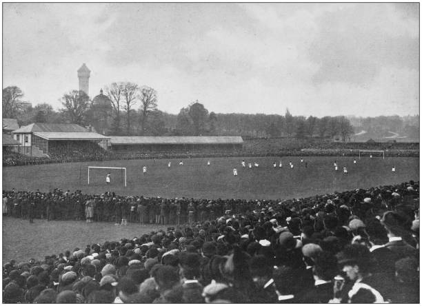

El fútbol tiene una historia muy larga y emocionante en Inglaterra. Se cree que juegos de pelota parecidos se jugaban hace muchos siglos. El fútbol moderno como lo conocemos empezó a tomar forma en las escuelas públicas inglesas durante el siglo XIX. En 1863, se creó la Football Association (FA), que estableció reglas一 para el juego. La primera liga de fútbol del mundo, The Football League, se fundó en Inglaterra en 1888. ¡Inglaterra también fue uno de los países que ayudaron a crear la FIFA en 1904!
